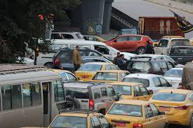

Traffic jam is the situation when vehicles are stopped completely for some time period on the roads. Also, vehicles have to wait for a long time to move out of the jam. Sometimes it becomes like congestion in traffic. This happens in transport network due to the increasing vehicles and overuse of roads. Often it is due to slow speed, longer trip time and increased queues of vehicles. Therefore, traffic jam is becoming a major issue mostly in all cities. essay on traffic jam Problems arising due to Traffic Jam Traffic Jam has a tremendous impact on the life of people. It is one of the most serious problems in big cities that people have to deal in daily life. Since most of the people have to deal with it on a daily basis they may get psychologically affected. It also negatively affects work, education and personal life of people and finally to the progress of the country.
